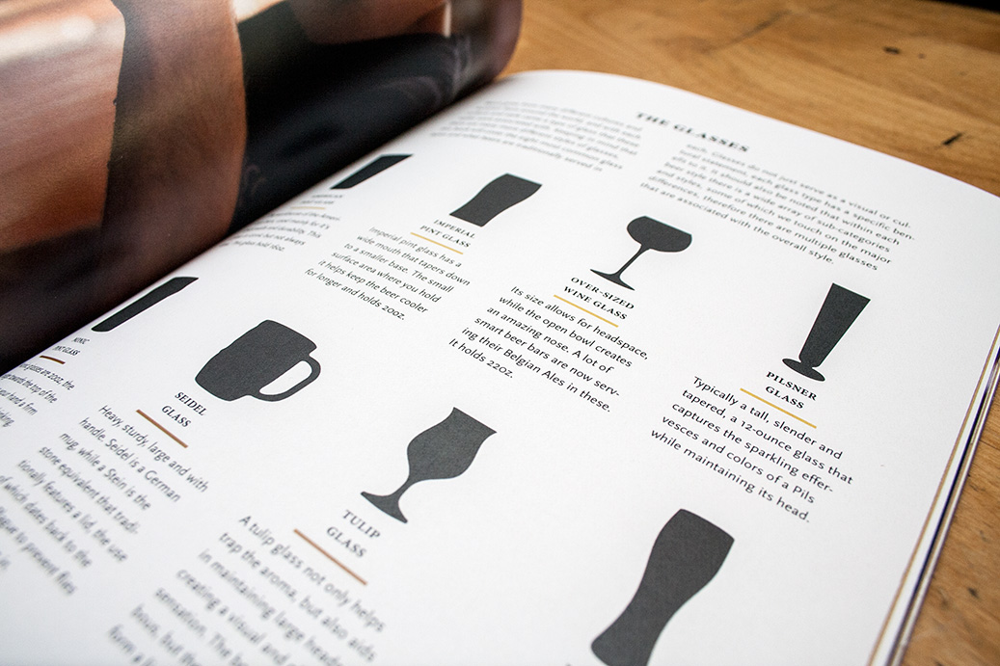
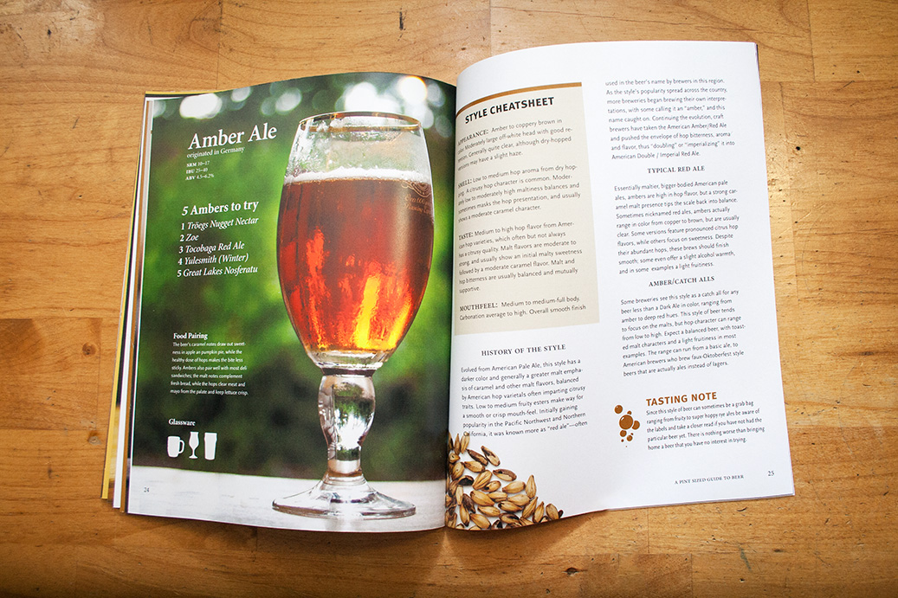
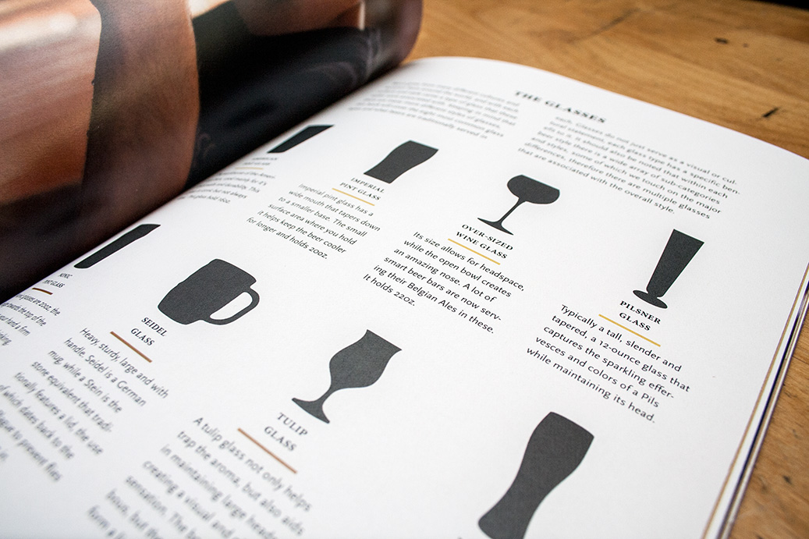
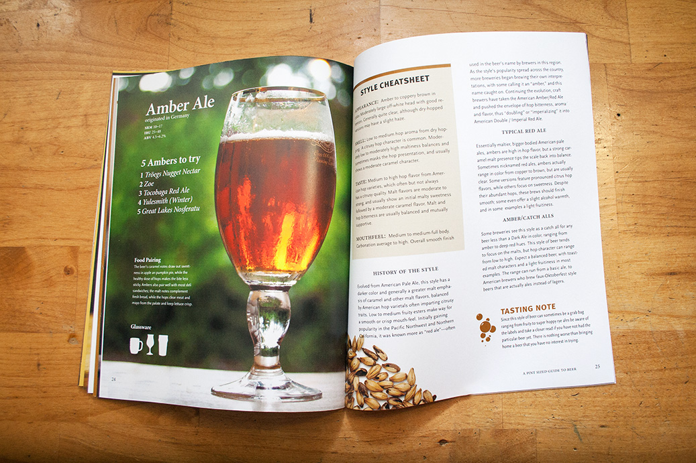

Pint Sized Guide to Beer
A guide and reference book to enlighten readers about beer, from the brand new beer lovers to the beer connoisseurs. This book covers 9 popular styles of beer and gives the reader quick glanceable points as well detailed information.
Most people enjoy beer but don’t know much about it, I felt it was a great opportunity to create a starter book that gives some history on popular stlyes as well as some tasting notes to help explain the styles. The book is broken down into two main parts, the introduction that gives beer a story and shows the brewers crafting their brews, reinforcing the fact that brewing and beer can be an art. Our second part is the beer styles, these are broken up into three sections, light beers, medium beers and dark beers, each with three styles that they cover. On the style pages we breakdown where the style originated, common stats, such as SRM, IBU and ABV, five reccomendations in the style, food pairings and proper glassware for the style, some also include tasting notes that give context to when or how one should drink that style. The book spotlights the beer with a photography direction that places the glass with beer in the front and all background is blurred keeping the focus on the brew, there are also images of ingredients to again enforce this idea of craft and art, pulling from the idea in cookbooks.
Full PDF Pint Sized Guide to Beer
 


